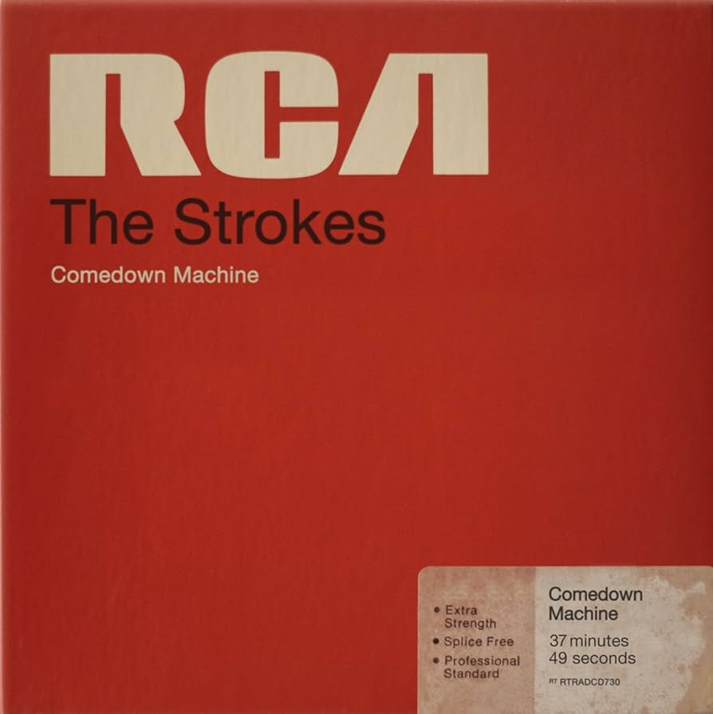

Comedown Machine is the fifth studio album by American rock band the Strokes. It was released on March 26, 2013, through RCA Records. The band decided to pull a media blackout for the album, with no promotion in the form of television appearances, interviews, photoshoots, live shows, or tours. The cover artwork was designed to resemble an old RCA tape reel box.
Comedown Machine is the fifth studio album by American rock band the Strokes. It was released on March 26, 2013, through RCA Records. The band decided to pull a media blackout for the album, with no promotion in the form of television appearances, interviews, photoshoots, live shows, or tours. The cover artwork was designed to resemble an old RCA tape reel box.
Before the release of the album the song "One Way Trigger" was released as a free download and was made available for streaming via YouTube and SoundCloud, and as a free download via the band's official website on January 25, 2013. Julian Casablancas posted a stylized lyric sheet for the song, designed by long-time collaborator Warren Fu, on his official website on January 30, 2013. "All the Time" was released as a digital download on February 19, 2013 and later released as a 7-inch single on April 20, 2013 and contained "Fast Animals" as the B-side.